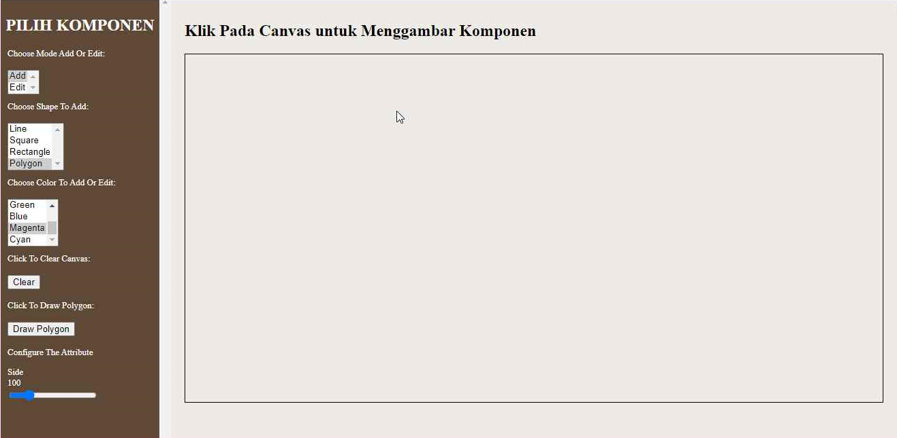
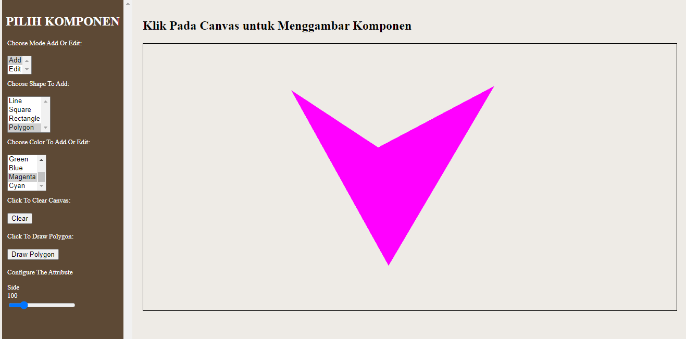

II. Menggambar Polygon
Pilih mode add
Pilih shape polygon
Pilih warna dari polygon
Tentukan setiap titik sudut dari polygon dengan meng-klik canvas sebanyak titik sudut yang ada dan di tempat yang diinginkan
- Titik sudut ke-1
- Titik sudut ke-2
- Titik sudut ke-3

- Titik sudut ke-4
Seteleh menentukan tiap titik sudut, gambar polygon dengan menekan button 'Draw Polygon'
Hasil akhirnya akan menjadi seperti berikut
